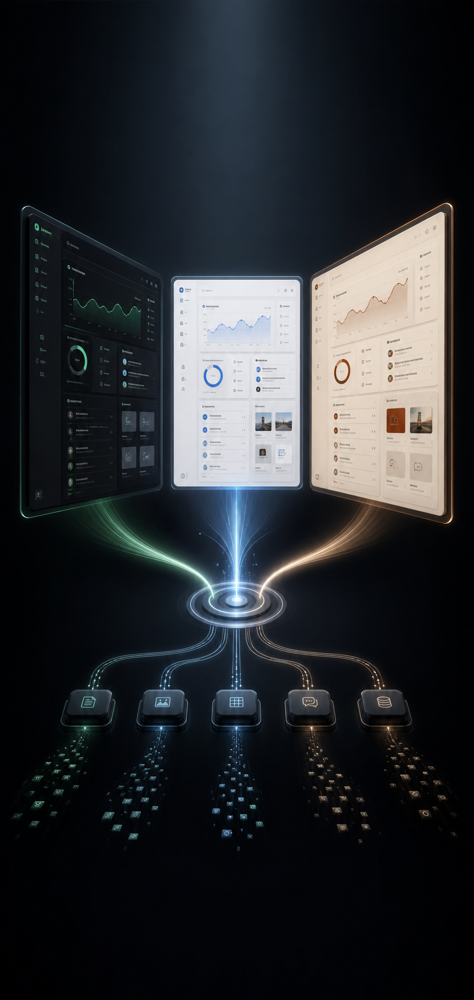

先问对问题
功能、每日闭环、资料来源、使用人和数据位置，先确认再执行。

FROM SCATTERED SIGNALS TO A DAILY OPERATING SYSTEM
不是套模板。它会先问、再读、再判断——从你授权的真实资料中，生成能每天使用、能写回、能验收的个人经营系统。
功能、每日闭环、资料来源、使用人和数据位置，先确认再执行。
按授权分析聊天、群消息、日报周报、项目文件、任务、文档和会议。
区分活动与结果，为每条判断保留来源、时间、置信度和证据边界。
连接飞书多维表格、钉钉 AI 表格或本地数据库，形成读写闭环。
项目、任务、资产、活动、决策互不混淆，覆盖日常经营全链路。
浏览器、API、真实后台、响应式和隐私安全逐项测试并回读确认。
用户选择默认风格，工作台内仍可随时切换。数据、功能和权限保持完全一致。
烟熏玻璃 · 信号绿 · 立体卡组
雾白表面 · 石墨文字 · 冷静蓝
纸张质感 · 炭黑文字 · 赤陶强调
三道授权门禁彼此独立。允许分析，不等于允许安装、发送或修改。
START WITH ONE SENTENCE